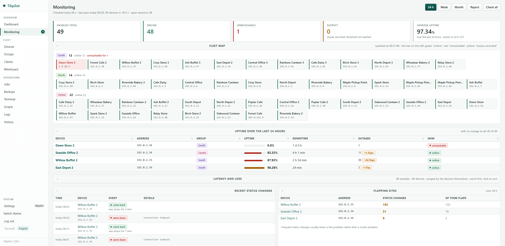

Мониторинг парка роутеров MikroTik
Полсотни площадок, у каждой свой провайдер, и все они иногда моргают. Разбор: что считать недоступностью, почему пороги без выдержки будят зря и как получать уведомления, которые не хочется выключить на второй день.
Первый вопрос: что значит «не работает»
Это выглядит как придирка к словам, пока не столкнёшься. Точка может не отвечать на запросы панели и при этом прекрасно работать: касса печатает, люди в интернете, WinBox открыт у коллеги. Просто до управляющего интерфейса не достучаться, потому что захлебнулся канал или упал сервис на роутере.
Разница между этими случаями это несколько часов дороги. В одном надо ехать или звонить на площадку, в другом чинить связь, сидя на месте. Мониторинг, который валит их в одну кучу и пишет «оффлайн», заставляет выяснять это вручную каждый раз.
Поэтому правильный порядок вопросов такой: жива ли площадка вообще (на это отвечает ping) и только потом, управляется ли она. Первое это статус, второе отдельная отметка рядом с ним.
Второй вопрос: выдержка
Порог без выдержки это будильник, который срабатывает от сквозняка. Канал на площадке моргнул на пятнадцать секунд, пришло уведомление, через минуту второе о восстановлении. Три такие точки в парке, и уведомления начинают уходить в архив не глядя, а вместе с ними уйдёт и то единственное, ради которого всё затевалось.
Поэтому у правила должно быть два числа, а не одно: порог и время, которое он должен держаться. «Не отвечает дольше пятнадцати минут» полезно, «не отвечает» бесполезно. Отдельно стоит завести тихие часы и дайджест, чтобы ночью приходило одно сообщение вместо сорока.
Что стоит мерить, кроме доступности
- Задержка и потери, померенные самим роутером до внешней цели. Меряет площадка, а не сервер: иначе вы измеряете свой канал до неё, а не её канал наружу.
- Скорость на аплинке как средняя между обходами. Всплеск за секунду ничего не говорит, а средняя за пять минут показывает, что канал забит.
- Свободная память долей от объёма платы, а не в мегабайтах. Одиннадцать мегабайт это треть hAP lite и последние крохи на CCR.
- Загрузка процессора в среднем за полчаса, а не мгновенная.
- Возраст последнего бэкапа и замолчавший syslog. Формально не мониторинг, а по факту то же самое: что-то сломалось и молчит.
- Место на диске самого сервера мониторинга. Классика жанра: закончилось место, база перестала писаться, и мониторинг молчит.
{kind=link}

Снимок с живого парка из 49 роутеров, названия и адреса подменены самой панелью.
Третий вопрос: куда смотреть утром
Дашборд, на котором всё зелёное, читают неделю, а потом перестают. Полезнее обратное: список того, за что хвататься сегодня, и пустота, когда хвататься не за что. Недоступные и мигающие точки, потери, старые бэкапы, замолчавший журнал, нехватка памяти, открытые наружу сервисы, доступные обновления — всё одним списком, отсортированным по серьёзности. Когда всё спокойно, блока просто нет.
Отчёты, которые спросят
Рано или поздно приходит вопрос «а сколько эта точка не работала за месяц», и задаёт его не технарь, а арендатор канала или начальник. Собирать такую справку руками из истории событий это полдня. Печатный отчёт с доступностью в процентах, журналом падений с датами и трафиком за период закрывает разговор за минуту.
Важная деталь, на которой мы сами обожглись: точке нельзя засчитывать время до того, как она появилась в системе. Иначе площадка, заведённая вчера, показывает безупречные сто процентов за месяц, и это не измерение, а отсутствие записей.
git clone https://github.com/maximdr86/tikpilot
cd tikpilot && cp .env.example .env
docker compose up -dЧастые вопросы
Чем это отличается от Zabbix?
Zabbix универсален и следит за чем угодно, но его надо настраивать. Здесь всё только про MikroTik и работает сразу, как заведены точки. Если Zabbix у вас уже настроен, менять его на это незачем.
Нужен ли SNMP?
Нет. Панель ходит по API RouterOS, тому же, через который выполняет массовые действия.
Сколько это ест ресурсов?
Виртуалки с одним ядром и гигабайтом памяти хватает с запасом. Узкое место не сервер, а каналы до площадок.
Можно ли дать доступ подрядчику?
Да, права выдаются поштучно, а учётную запись можно ограничить конкретными группами или точками. Есть и публичная ссылка на лист состояния без входа: только имена площадок и «в сети или нет».